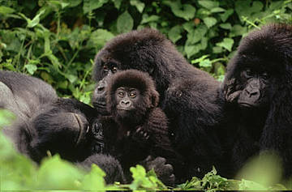

Nombre científico: Gorilla gorilla y Gorilla beringei El gorila occidental se divide en: gorila occidental de tierras bajas (Gorilla gorilla gorilla) y gorila del río Cross (Gorilla gorilla diehli). Y el oriental en: gorila de montaña (Gorilla
beringei beringei) y gorila oriental de tierras bajas o gorila de Grauer (Gorilla beringei graueri). Miden entre 1,2 y 1,7 metros cuando están sobre las dos patas. Los machos adultos pueden pesar hasta 200 kilos, mientras que las hembras no suelen
superar los 100 kg. Son principalmente herbívoros y dedican casi la mitad de su día a alimentarse de tallos, brotes de bambú y una gran variedad de frutas, dieta que complementan con invertebrados y cortezas de árboles. Se sabe también que algunas
subespecies rompen nidos de termitas y se alimentan de las larvas. Viven en grupos familiares de entre 5 y 10 individuos normalmente, pero se conocen casos de parejas y de grupos de más de 50, liderados por un macho dominante que mantiene su posición
durante años. Hábitat: Las dos especies de gorilas que existen (gorila oriental y occidental) viven en bosques tropicales y subtropicales de África central, separados por unos 900 km pertenecientes al bosque del Congo. La cuenca del Congo es hogar
del segundo bosque tropical más grande del mundo, es el corazón verde de África. Se estima que tan solo un 2,8% vive en zonas protegidas, sin embargo, habita en grandes zonas boscosas muy cercanas a estos parques nacionales y a las reservas, alejadas
de los centros de actividad humana. Por lo tanto, la conservación de las áreas forestales vírgenes es imprescindible para la protección de los gorilas y chimpancés. Cada especie (gorila oriental y occidental) tiene a su vez dos subespecies y,
aunque suelen vivir en tierras de baja latitud, algunas viven en bosques de montaña (entre 1.500 y 3.500 metros) y en bosques de bambú (entre 2.500 y 3.000 metros).